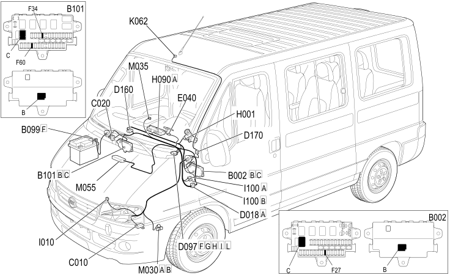

E7015 ALARM LOCATION COMPONENTS
- Path
- Electrical equipment > 1 ELECTRICAL FUNCTIONS > E70 VEHICLE ELECTRONIC SYSTEMS > E7015 ALARM > E7015 ALARM LOCATION COMPONENTS
- Kind
- topic
- Applies to
- all engines; all production periods
- Interactive page
- https://sloeber94.github.io/elrnDB-fDct/en/#/244002007
Applies to: all engines; all production periods

Component code | Description | Reference to the assembly |
|---|---|---|
JUNCTION UNIT UNDER DASHBOARD | - | |
MAXI FUSE BOX ON BATTERY | - | |
OPTIONAL JUNCTION UNIT UNDER THE DASHBOARD | - | |
LEFT FRONT EARTH | - | |
ADDITIONAL FRONT/DASHBOARD COUPLING | - | |
SHORT CIRCUITING COUPLING | - | |
DASHBOARD/OPTIONAL DASHBOARD COUPLING | - | |
FRONT/OPTIONAL COURTESY LIGHT COUPLING | - | |
ALARM LED | - | |
SWITCH CONTROL PANEL | ||
BONNET RELEASE SWITCH | - | |
REMOTE KEY FOR DISABLING ANTI-THEFT DEVICE | - | |
- | ||
ALARM REMOTE CONTROL RECEIVER | - | |
AUTOMATIC TRANSMISSION CONTROL UNIT | - | |
- |
Topics linked from this page (15)
- B002 JUNCTION UNIT UNDER DASHBOARD
- B099 MAXI FUSE BOX ON BATTERY
- B101 OPTIONAL JUNCTION UNIT UNDER THE DASHBOARD
- C010 LEFT FRONT EARTH
- D018 ADDITIONAL FRONT/DASHBOARD COUPLING
- D097 SHORT CIRCUITING COUPLING
- D160 DASHBOARD/OPTIONAL DASHBOARD COUPLING
- D170 FRONT/OPTIONAL COURTESY LIGHT COUPLING
- E040 ALARM LED
- H090 SWITCH CONTROL PANEL
- I010 BONNET RELEASE SWITCH
- I100 REMOTE KEY FOR DISABLING ANTI-THEFT DEVICE
- M030 ALARM CONTROL UNIT
- M035 ALARM REMOTE CONTROL RECEIVER
- M055 AUTOMATIC TRANSMISSION CONTROL UNIT